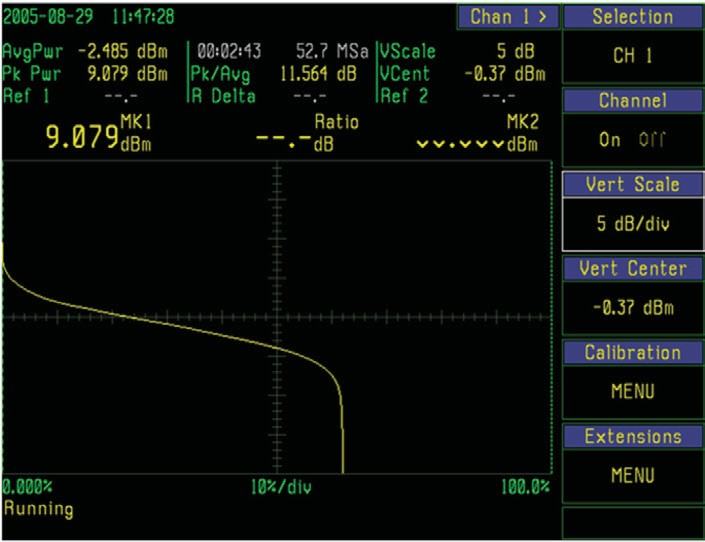
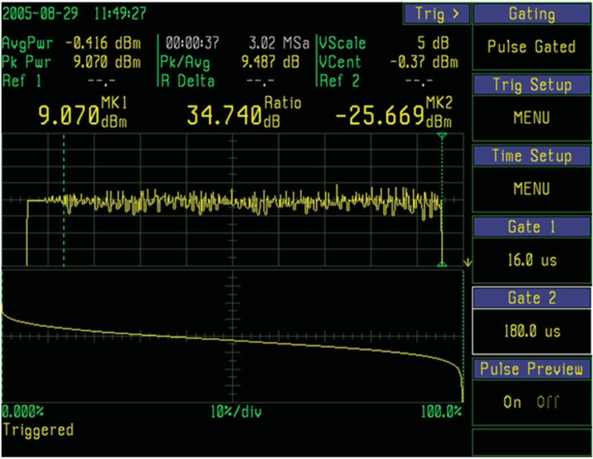
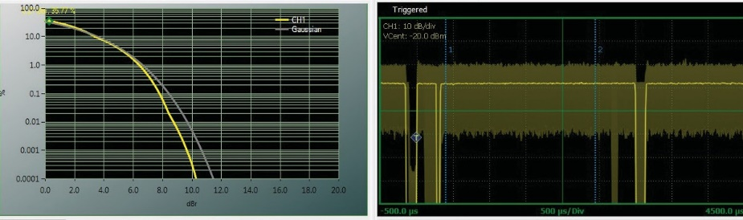
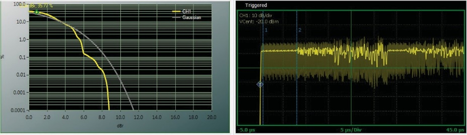
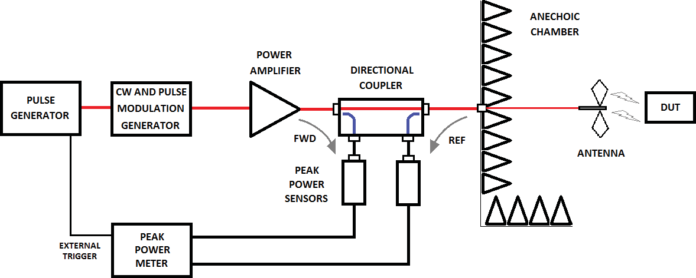

Chapter 7: Power Measurement Applications
This chapter walks through the power measurement problems that show up every day in real labs: low-duty-cycle pulse measurements, statistical analysis of modern communication signals, and EMC compliance testing. Each section explains why ordinary measurement techniques struggle, and what a peak or true-RMS power sensor brings to the problem.
7.1 Low Duty-Cycle Pulse Measurements
The amplitude, quality, and stability of a transmitter's output power are critical for specialized tube amplifiers such as TWTAs, magnetrons, and klystrons. These devices are designed for high-power radar, particle accelerators, and magnetic resonance imaging (MRI). They must provide consistent pulsed linear power to a large antenna with low return loss, or to powerful magnets that create similar power transfer issues. Accurate peak power measurement matters for safety and optimum performance. A common characteristic of these applications is the use of a low duty-cycle pulse: short pulses that probe small targets at long range for radar, or that precisely position atom-scale particles for physics research.
Before peak power meters were available, pulse power was computed indirectly from an average power measurement performed with an average-responding meter. Pulse power was calculated by dividing the average power by the duty cycle. The duty cycle is often a known characteristic, calculated by dividing the pulse width of the power envelope by the pulse repetition interval.
This computation assumes constant peak power and does not take into consideration overshoot, ringing, or other waveform distortions. That is why it is called pulse power and not peak pulse power. The pulse must be repetitive, rectangular, and of constant duty cycle for the calculation to be accurate.
The dynamic-range trap. One advantage of an average power meter is the ability to measure across a wider dynamic range than a peak power meter, but this advantage assumes the signal envelope is a perfect rectangle. The advantage disappears for narrow duty-cycle signals.
In a radar or MRI system, the RF or microwave carrier is sent in short bursts over long periods to provide a signal to measure across long range and small target size. Simple range-finding radars use pulse modulation. Some Doppler radars use a continuous-wave tone. Pulse modulation switches the carrier on and off in synchronization with an external pulse signal, and is not modulated like a communication signal. The envelope of the pulse waveform is extracted from the demodulated carrier in the receiver.
A CW signal has the same average and peak power value and can be measured provided the value is within the sensor's dynamic range. A narrow duty-cycle pulsed signal can have a significantly lower average value outside the sensor's dynamic range, even when the peak falls within range.
To accurately measure pulse power using the duty-cycle method, the signal's average power must be measured accurately. This requires keeping the average power well above the sensor's noise floor. At the same time, the sensor must be able to handle the highest power peaks while the pulse is on, or the sensor produces erroneous readings or burns out.
Most average power sensors can accommodate peaks 10 to 20 dB above their maximum average power ratings, so pulse waveforms with relatively wide duty cycles can be measured without challenge. For signals with duty cycles narrower than about 1%, the dynamic range of the average-responding sensor is eroded by the need to keep both the peak power and the average power within the sensor's measurable range.
As the duty cycle of a power envelope decreases, typically below 1%, the average power reading moves further away from the actual peak power delivered, and larger-dynamic-range sensors are required.
Worked example. Consider a periodic waveform with a 1 µs pulse repeating at a 10 Hz rate.
Duty cycle = (1.0 × 10⁻⁶) / 0.1 = 0.00001, or 0.001%. Duty cycle in dB = 10 × log₁₀(0.00001) = -50 dB.
Measuring the pulse power of this signal requires a power meter with at least 50 dB of dynamic range. For a typical thermal sensor with 22 dB peak headroom (+42 dBm), this means the signal's average power must remain at least 50 dB below its peak rating, or -8 dBm. These thermal sensors have a noise floor near -25 dBm, so the signal can vary by no more than 17 dB before its peak burns out the sensor or its average falls below the noise floor. For accurate measurements the signal should remain 6 to 10 dB above the noise floor, which further degrades the dynamic range.
A peak power sensor with its wide dynamic range is often a better solution for several reasons.
- The pulse shape is not always rectangular and contributes errors when calculated using an average-power measurement and the duty-cycle method.
- The dynamic range of an average power sensor is reduced in proportion to the duty cycle, because noise integrates into the measurement when the PRI is long and the pulse width is short.
- A fully calibrated peak sensor offers a dynamic range up to 70 dB and is capable of measuring a 50 dB peak-to-average ratio without affecting the measurement.
A comparison of sensor types versus duty cycle reveals the trade-offs. Both thermal and average diode sensors run out of dynamic range for duty cycles narrower than about 0.003%. The thermal sensor's operating area can be extended in some applications by taking advantage of its peak-handling capability being considerably higher than its average power rating. This is dangerous, because the source may generate considerably more power than the sensor can safely handle. The user depends on the signal's duty cycle remaining narrow enough to limit the average power to a safe value. If the signal's duty cycle increases, the average power increases accordingly, and the sensor can be damaged.
The peak power sensor does not suffer from duty-cycle limitations. Its operating dynamic range is wide regardless of waveform duty cycle. The true peak power is measured directly, and even single-pulse events are easily measured.
Typical radar pulse measurements include:
- Pulse width (usually measured at 50% points, or per the radar standard at -3 dB points)
- Pulse rise time and fall time
- Overshoot and droop
- Pulse repetition frequency and interval
- Peak power within the pulse
- Average power over a defined window
- Duty cycle
A single well-configured peak sensor measurement captures all of these simultaneously.
For applications where the production line cares about average power and stability rather than pulse-shape parameters, the Berkeley Nucleonics 12100 series in time-gated mode integrates true-RMS power over the active pulse window. The result is a clean average reading for the on-time portion of the pulse, suitable for go/no-go production tests on radar transmitters. Pulse-shape parameters can then be verified separately on the development bench.
7.2 Statistical Analysis of Modern Communication Signals
The latest wireless communication formats (DVB, DAB, WiMax, WLAN, 802.11ac WiFi, LTE-FDD, LTE-TDD, 5G NR) use OFDM modulation schemes with multiple carriers to transmit digital information. OFDM is a multi-carrier modulation scheme with a high crest factor designed to transmit large amounts of data. The introduction of digital transmission technology forced engineers to deal with power peaks up to 20 dB above the average value. RF power components must be specified to handle the expected voltage peaks and avoid breakdown or flashover.
The crest factor (the ratio of the peak value to the average or RMS value) must be determined to correctly specify these components. The peak power of several interconnected transmitters can reach more than one hundred times the thermal or average power level. The selection of RF power components for the transmission system (antenna combiners, coaxial lines, antennas) cannot be based solely on thermal or average power. Short voltage spikes that occur rarely are critical when sizing components.
Why statistics matter for communication signals. Crest factor measurements over 12 dB (P_PEP / P_AVG) are difficult to make with repeatable results. To properly accommodate high crest factors, a single peak measurement is not adequate. Statistical analysis is required.
Low-amplitude communication signals with high crest factor are important when considering BER, but the bigger concern is system damage. The high voltage associated with large power peaks can produce flashover or a standing arc in the transmitter system and destroy components. Statistics are an important tool for measuring these rare events. Because the instantaneous power values are sorted by magnitude rather than time of occurrence, they are counted and not averaged. The process can run for a very long time, limited only by available memory, or run indefinitely if decimation is applied. This is invaluable for characterizing events such as the maximum peak power of an OFDM signal that might occur once a day. Capturing pulse data using statistics provides additional insights not easily observed when capturing amplitude-versus-time measurements.
A real-world CCDF comparison of three reference signals illustrates the value of statistical analysis. A 100% AM-modulated sine wave shows a "squared off" CCDF with a peak-to-average ratio of 3 dB at both low and high probabilities, because of the highly predictable periodic waveform. An OFDM signal shows a peak-to-average ratio of about 15 dB and follows a Rayleigh distribution. White Gaussian noise has a theoretically infinite peak-to-average ratio, here showing about 17 dB at a probability level of 10⁻¹².
For the AM-modulated signal, very few samples are needed to measure peak power. The OFDM signal has a high peak-to-average ratio with peaks that occur infrequently. For these signals the power meter must acquire many samples over a period of time to accurately characterize the power distribution.
The PDF, CDF, and CCDF connection. A power histogram tallies samples into bins by power level. The PDF is the smooth limit of that histogram. The CDF is the integral of the PDF, ranging from 0.0 (minimum power) to 1.0 (peak power). The CCDF is the inverse of the CDF (1 minus CDF), running from 1.0 at minimum power to 0.0 at peak. CCDF is the standard presentation in modern peak power meters because peaks are usually what stress the system.
A 16 QAM modulated signal makes the structure visible. Three distinct power levels in the constellation correspond to three peaks in the PDF, each weighted by how often that level occurs.
Free-running versus gated CCDF. A continuous, free-running acquisition will gather samples during both active and inactive (off) signal intervals, distorting the CCDF. Power falls off quickly above about 62% probability, indicating the signal is spending more than a third of its time at low or off power levels. In a time-slotted or bursted signal such as WLAN, this is expected, since the transmitter is off between packets.


For a more meaningful CCDF on time-synchronous signals, advanced peak power meters offer time-gated statistical mode, which performs statistical acquisition only during selected portions of a waveform. This excludes off-time and preamble, leaving a CCDF that accurately reflects the power distribution during the more random payload portion of the frame. Time-gate cursors define the region of interest. Only the WLAN payload is included in the resulting CCDF, no longer skewed by the low-crest-factor preamble or the off interval between bursts.




The normalized log-log CCDF view is often more useful, as it expands the very low-probability events of interest. These are the regions where signal compression begins to affect the bit error rate of digitally modulated communication signals. Rotating the X and Y axes (log probability on Y, normalized power on X) gives the textbook presentation. The left end of the Y axis is 0 dBr, corresponding to the signal's long-term average power. The trace intersects the X axis at low probability, for example 10⁻⁶, meaning only one sample out of every million is expected to exceed the average power by that amount.
Dual-channel comparison. Berkeley Nucleonics peak power meters support multiple channels, enabling a dual CCDF feature that compares the input and output power distributions of an RF device such as a power amplifier. Crest-factor deviation between input and output reveals compression directly. Because the signal being amplified is an actual communication signal, it contains all the frequencies and power levels of interest and operates the amplifier across its entire dynamic range. The CCDF is more useful than a simple crest-factor measurement, because it quantifies the amount of compression at various probability levels.

This lets designers evaluate amplifier performance using its intended signal type rather than a CW tone, replacing simplified figures of merit such as the 1 dB compression point. If the amplifier has been built into a receiver and a baseline BER value for an operating system is known, BER and CCDF can be correlated on the physical layer before the receiver is assembled for production. Section 8.3 contains an in-depth discussion of dual-channel statistical power measurement for RF amplifier testing.
7.3 Using Power Meters for EMC and Compliance Testing
The complexity of modern digital equipment has made EMI/EMC susceptibility testing increasingly important. Many EMC standards exist, including MIL-STD-461, IEC 61000, ISO 11451 Automotive, EN 50, and FCC Part 15. Each provides specific guidelines for EMC and EMI test methodologies. Early standards required a CW carrier or a single tone with constant modulation as the disturbance test signal. In January 2010 the IEC committee approved the 61000-4-4-am1 (ed. 2) amendment, allowing the use of burst testing on devices. Amendment 1 defines an impulse (spike frequency) of 100 kHz, and Edition 2 requires burst testing with either the traditional 5 kHz spike or the new 100 kHz spike frequency. The burst test emulates real-world RF interference emitted by base-station communication amplifiers and ground-based radar antennas.
This section illustrates how a peak power sensor can replace a single diode detector in a field probe to measure pulse power, improve repeatability, and increase the dynamic range of the power measurement.
Historical background. Before the late 19th century, the primary sources of electromagnetic disturbance were lightning strikes and sunspots. The growing popularity of electrical and radio equipment in the early 20th century generated the first artificial forms of interference, from electrical-powered equipment and competing radio transmitter towers around the world. Competition led to the creation of international regulatory agencies such as the FCC. The trend continued in the 1940s with the adoption of high-power industrial switching devices that caused coal-mine explosions, automobile and airplane fueling-station fires, and electrical-grid outages. During the 1950s and 1960s, ISM (industrial, scientific, medical) unlicensed frequency bands were allocated by the FCC, permitting the generation of relatively high-power RF signals. Because emission in these bands was uncontrolled, a variety of interference issues emerged from sideband harmonics and broadband emissions. The impact created the need for new standards and laws to regulate emissions. With the advent of digital circuitry in the 1970s, faster switching speeds increased emissions and lower circuit voltages increased susceptibility. The 1980s brought increasing use of mobile communications and broadcast media channels, creating pressure on available spectrum space. Regulatory requirements for smaller band allocations demanded increasingly sophisticated EMC design methods. Although digital signals are often less susceptible to interference than analog systems, their operation at lower power levels gives up some of that immunity. Together these forces created the need for increasingly complex EMC/EMI testing.
Definitions. Electromagnetic Compatibility (EMC) is a branch of electrical science that studies the unintentional generation, propagation, and reception of electromagnetic energy from electromagnetic interference (EMI). An emission is intentional or unwanted electromagnetic energy produced by a source, which may couple into other devices. Susceptibility (or immunity) is the inability (or ability) of a piece of electronic equipment, the victim, to operate correctly in the presence of nearby emissions or other electromagnetic interference signals. EMC is achieved by addressing both emission and susceptibility aspects of an electronic device.
Four types of electromagnetic coupling exist: radiative, inductive, capacitive, and conductive. The primary type discussed in this section is radiative, in which a signal radiates through space as an electromagnetic wave with no physical connection between source and victim.
The purpose of immunity testing is to emulate real-world RF interference on an electronic device or system. One example is the automotive CANBUS system used for wired digital communication between electronic subsystems. These systems monitor and control engine operation, acceleration, braking, and steering / stability, so their ability to operate correctly under all foreseeable conditions of electrical interference is crucial to passenger safety. Rigorous RF immunity has become a mandatory part of the automotive design process and most other systems where any malfunction could result in injury or property damage.
Two test methods. Immunity testing is performed in a large anechoic chamber for isolation from external RF interference while testing the EUT (Equipment Under Test). One important requirement is to apply a simulated interference signal with an accurately known amplitude. RF field strength is typically measured and characterized during or prior to the test using one of two techniques: the closed-loop method or the substitution method.
Closed Loop Method. An RF field probe is positioned in front of, or on top of, the EUT during susceptibility testing. The signal generator's output power is adjusted at each specified frequency step across the test band to achieve the desired RF field strength in the chamber. The word "probe" can have two meanings. One is the field probe assembly inside the test chamber. The other is shorthand for an average diode detector circuit. The average diode detector is a component of the field probe assembly and measures RF power through a coaxial cable.
The average diode detector in the field probe does not accurately measure the field strength of a modulated RF signal, so correction factors must be applied to the probe readings to account for the signal's dynamic behavior. A CW signal can be used to estimate the power being delivered, but an additional correction factor must be applied to account for the modulation applied during the actual testing. This correction is adequate for simple AM modulation, but is often insufficient for the narrow-duty spikes required by today's test standards.
The simple diode detector can be replaced by a peak power sensor to accurately measure the interference signal's true amplitude even in the presence of modulation. A peak power sensor follows the signal's power envelope and yields the true average and peak power, provided the envelope bandwidth remains within the maximum video bandwidth of the sensor and meter. A good peak power sensor is calibrated for increased dynamic range and is temperature compensated. Using a peak power sensor eliminates the need to apply modulation corrections when a pulsed or modulated interfering signal is used rather than a CW source. When the modulating waveform is complex or a narrow-duty pulse, a peak power sensor becomes mandatory: it is impossible to accurately correct these waveforms for nonlinearity due to modulation when using a conventional diode sensor or probe.
Substitution Method. An RF field probe is used to characterize and calibrate the RF field strength in the anechoic chamber before the EUT is placed inside. The field strength is adjusted for each frequency step across the band. The EUT is then positioned in the test environment. This method does not require field monitoring during the test and is referenced by some EMC test standards. While not required, a probe is often used during the test run just to monitor the RF field. Direct feedback ensures good system performance.
Both the closed-loop and substitution methods use a high-power signal generator connected to a radiating antenna for repeatable RF transmission while testing the EUT. The closed-loop method requires the field probe during testing. The substitution method allows it. In either case, it is beneficial to use a calibrated peak power sensor rather than the average diode detector typically found in most field-strength probes. This eliminates multiple calibrations, modulation correction factors, and the temperature compensation associated with the average diode detector. It provides both peak and average information about the interfering field's characteristics. Without these values, it is impossible to be certain that the EUT is operating in the intended interference environment.
Anechoic Test Chamber. Anechoic chambers line their interior walls with RF radiation absorbing material to eliminate reflections and external interference. The combination of shielded enclosure and absorber lets the test engineer apply a known field to the EUT and read the response cleanly. Both closed-loop and substitution methods rely on this isolation. Without it, multipath reflections inside the chamber would smear the field amplitude and make repeatable measurement impossible.
Monitoring delivered power using couplers. Another important testing requirement is the application of a simulated interference signal with accurately known amplitude. A typical setup uses a power amplifier to boost the signal from the RF generator that produces the CW and pulse-modulated signals. The generator output needs good spectral purity so that spurious signals are not fed into the PA. The PA itself must be linear and broadband. While performing the test, the signal generator's output power is adjusted at each specified frequency step across the test band to achieve the desired RF field strength in the chamber.
Biconical antennas, known for broadband characteristics, are ideal for swept measurements for emissions and immunity testing, but their poor VSWR performance means large portions of the transmitted signal are reflected back to the PA. The net power radiated to the DUT is the difference between PA output power and the reflected power from the antenna. To establish the precise net power radiated to the DUT, both delivered power from the PA and reflected power from the antenna must be measured. A dual-channel power meter and a four-port directional coupler provide the best method for measuring reflected power and amplifier output power simultaneously.

Pro tip. Keep an average power sensor taped to the output port of any EMC immunity signal source. A transmitter that quietly drifts over a weekend will stop passing compliance. You want to find that on Monday morning, not three months later. The Berkeley Nucleonics 12100 series is built for exactly this kind of unattended monitoring: real-time clock timestamps, internal logging via UOP, and zero drift between measurement sessions.
Check your understanding
Two quick questions on power measurement applications. Your answers save on this device.